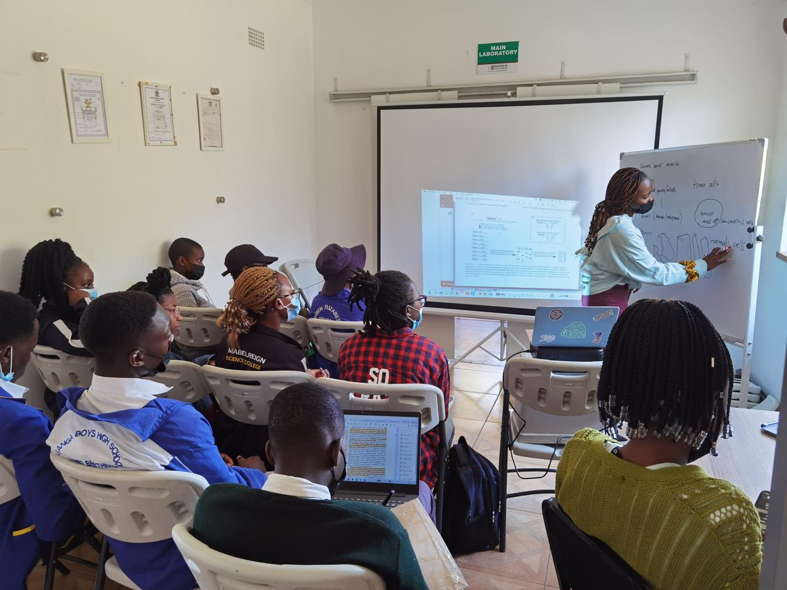
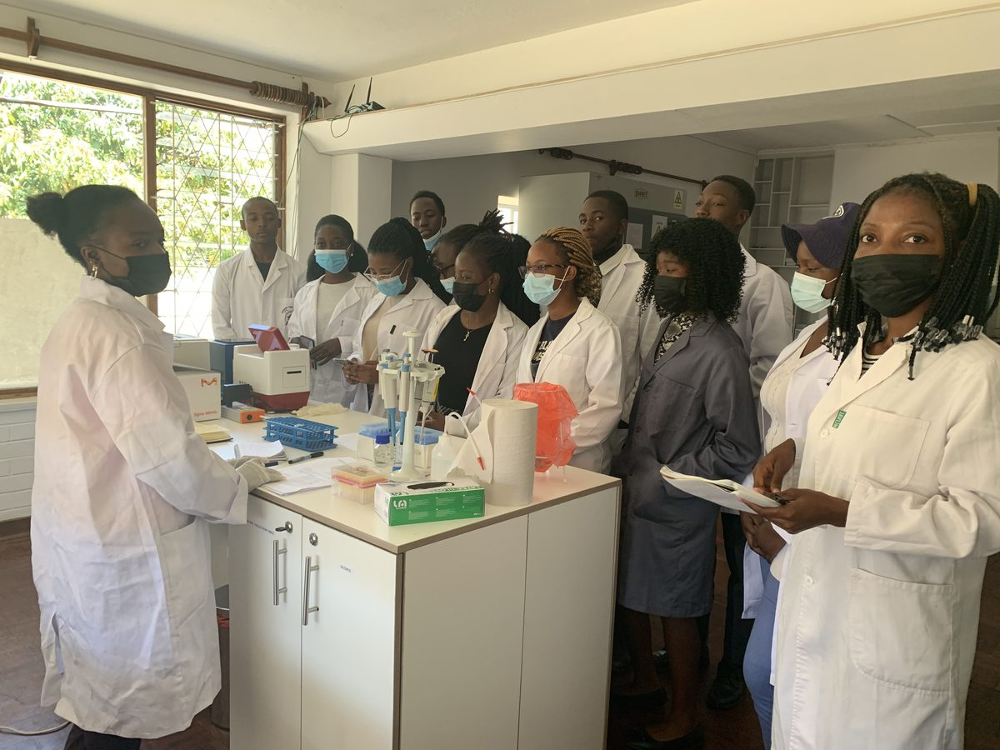
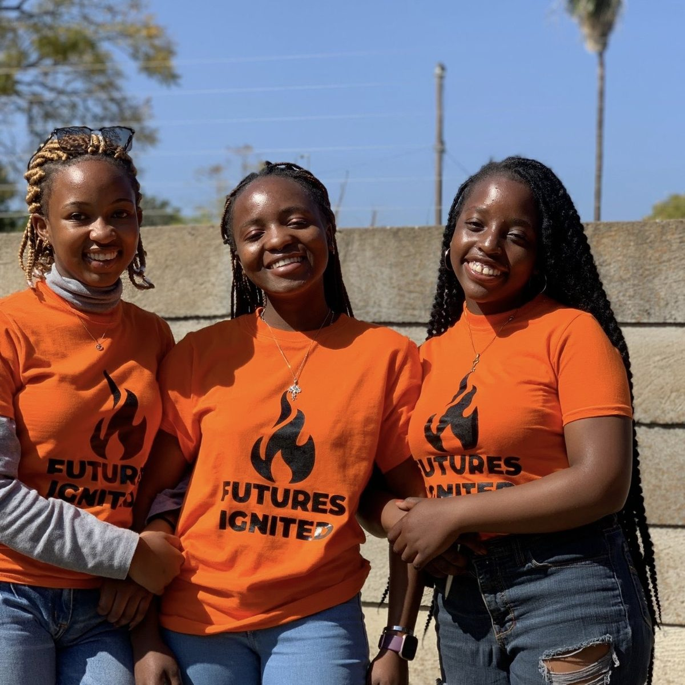
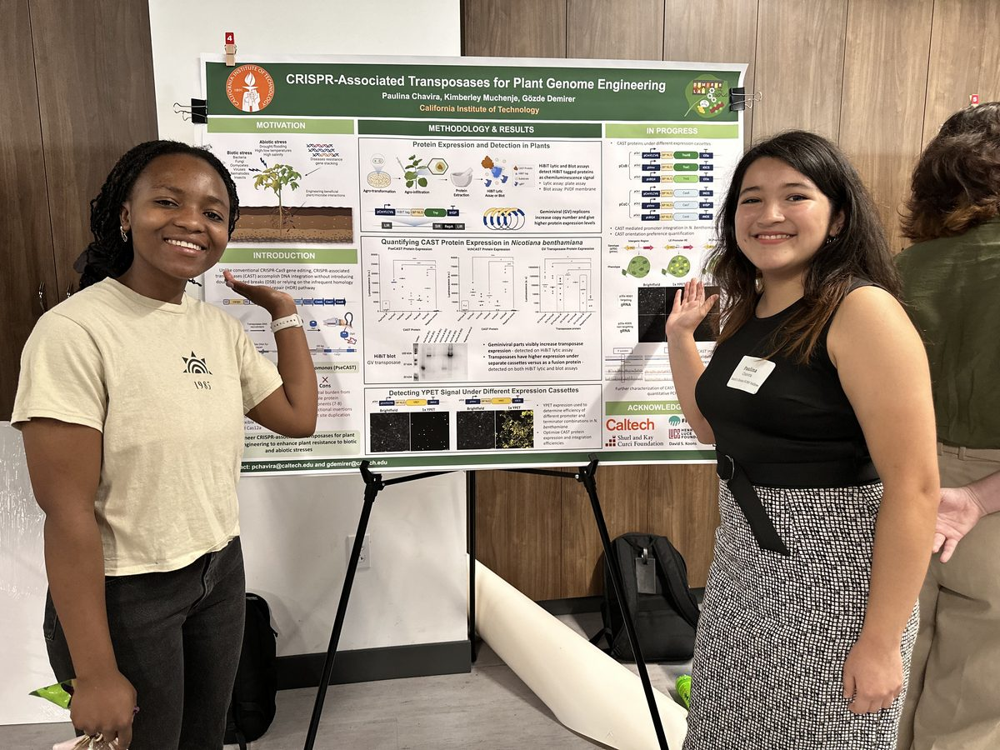
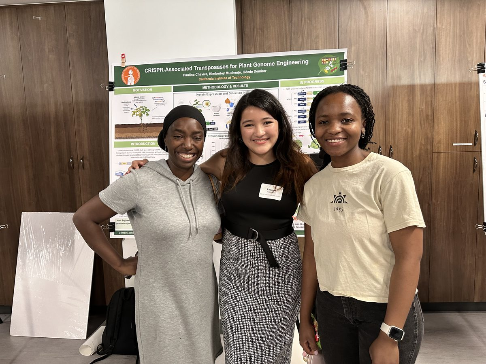

Mentoring
She believes in paying forward the mentorship that shaped her own journey into science.
Jekesa Remangwana, founder
Futures Ignited in English. A genomics, bioinformatics, and genome editing course for high school and college students in Zimbabwe, funded by a Kathryn Davis Peace Project award of $10,000, exposing students to cutting edge research techniques and their applications in biomedical research, agriculture, and microbiology.
SynBio4ALL Africa, instructor
Virtual synthetic biology course curricula focusing on plant genome editing, delivered to over 100 students across Africa.
San Marino High School, research mentor
Meeting with students every two weeks through the full school year on a project extending the R2Tg editor to an 11 kb payload carrying a four-gene mushroom luciferin biosynthesis pathway, testing whether the integrated copies are full-length and functional.
Teaching Assistant, ChE/Ch/BE 130, Caltech
Designed and taught a laboratory course in which students used CRISPR-Cas9 to knock out genes in N. benthamiana and observed the knockout phenotypes, which ran across two offerings.
Jekesa Remangwana, Zimbabwe



Research mentees at Caltech

